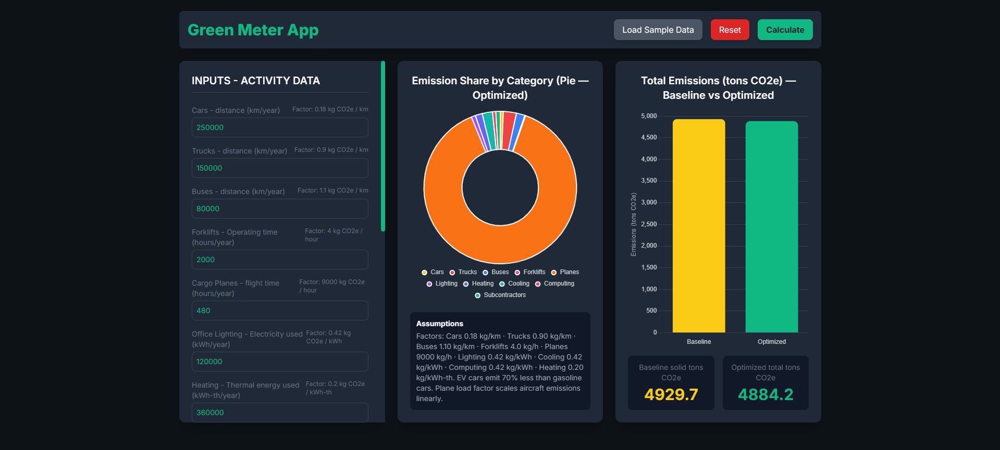
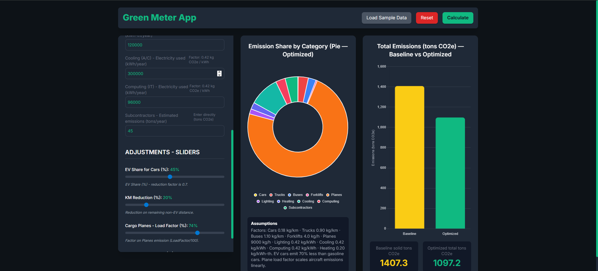

Screenshots
The app, running with real input data

Full input panel — ten activity categories, each with its own emissions factor shown inline.

Adjustment sliders — EV Share for Cars, KM Reduction, Cargo Planes Load Factor, each labeled with what it actually does to the calculation.

Result after adjustment — baseline 3,346.2 t down to 1,909.0 t CO2e, about a 43% cut.
Factors: Cars 0.18 kg/km · Trucks 0.90 kg/km · Buses 1.10 kg/km · Forklifts 4.0 kg/h · Planes 9000 kg/h · Lighting 0.42 kg/kWh · Cooling 0.42 kg/kWh · Computing 0.42 kg/kWh · Heating 0.20 kg/kWh-th. EV cars emit 70% less than gasoline cars. Plane load factor scales aircraft emissions linearly.